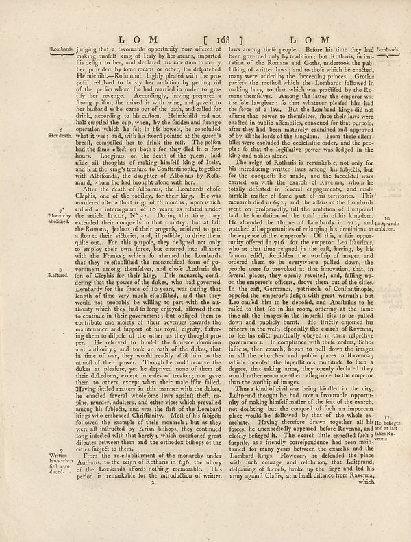

Scan ID britannica:309f765b1ecc83e0a7f7762e44b4a927a7555443:train:2051
Image SHA-256 588566464df4b426ffc48c73095181f8040fb4c5dfb1bf3ef4738390589d2302
Status: ok. Running header: none (none). Removed page furniture: none.
PDF · raw Parse reply · LaTeX
Entries: E0178

| # | Class | Box | Parse 3.5 | Used text | Source |
|---|---|---|---|---|---|
| 0 | Title | [0.2812, 0.0602, 0.5967, 0.0852] | **LOM [ 168 ]** | LOM [ 168 ] | super_vl |
| 1 | Text | [0.6943, 0.0617, 0.8066, 0.0836] | **L O M** | super_vl · emptied | |
| 2 | Text | [0.1162, 0.0813, 0.543, 0.3422] | Lembards, judging that a favorable opportunity now offered of making himself king of Italy by her means, important his design to her, and declared his intention to marry her, provided by form means or other, as defated Heimchild-A. Edmund, highly graded with the pro- postal, refored to satisfy her ambition by getting rid of the perfer whom he had married in order to gra-tify her average. Accordingly, having prepared a strong point, the next it will wins, and gave its her husband at be came out of the bath, and did for drink, according to his culm.. Helmchild had not half capital the city, when | Lombards, judging that a favourable opportunity now offered of making himself king of Italy by her means, imparted his design to her, and declared his intention to marry her, provided, by some means or other, the despatches Helmchild.—Rosamund, highly pleased with the proposal, resolved to satisfy her ambition by getting rid of the person whom he had married in order to gratify her revenge. Accordingly, having prepared a strong poison, he mixed it with wine, and gave it to her husband as he came out of the bath, and called for drink, according to his custom. Helmchild had not half emptied the | super_vl |
| 3 | Text | [0.1182, 0.3414, 0.542, 0.8406] | After the death of Albioners, the Lombarda choic Clephie, one of the holiday for theology. He was murdered after a flort reign of 18 months 3 upon which ended an interception to 10 years, is related to this article. Lucan N? 21. During this time, they extended their compelled in the country, but at all the Romans, johous of their projects, refused to pay a flop to their viflories, and, if podhile, to drive them quite out. For the purpose, they designed and only to employ their own force, the entered into alliance with the Frankri, which to shared the Lombarda that they re-established the amorn | After the death of Alboinus, the Lombards chose Clephis, one of the nobility, for their king. He was murdered after a short reign of 18 months; upon which ensued an interregnum of 10 years, as related under the article ITALY, N° 32. During this time, they extended their conquests in that country; but at last the Romans, jealous of their progress, resolved to put a stop to their victories, and, if possible, to drive them quite out. For this purpose, they designed not only to employ their own force, but entered into alliance with the Franks; which so alarmed the Lombards that they re-established | super_vl |
| 4 | Text | [0.1172, 0.832, 0.1631, 0.8758] | Written law written fall intro- alused. | Written laws introduced. | super_vl |
| 5 | Text | [0.5537, 0.0844, 0.9844, 0.2938] | laws among theft people. Before his time they had Lombarda been governed only by problems but Richard, in imi-tation of the Romans and Gohay undertook the pub- filing of writers have s and to thold which he needed, many were added by the leading providers. Greatina prefiers the method which the Lombards followed in making laws, so that which are prohibited by the Ro- there themselves. Among the latter the emperor was the role langversj is that whatever plodef him land the forces of a law. But the Lombard kings did not allow that you to themelfes, fines their laws were created in public chariti | laws among these people. Before his time they had been governed only by tradition: but Rotharis, in imitation of the Romans and Goths, undertook the publishing of written laws; and to those which he enacted, many were added by the succeeding princes. Grotius prefers the method which the Lombards followed in making laws, to that which was professed by the Romans themselves. Among the latter the emperor was the sole lawgiver; so that whatever pleased him had the force of a law. But the Lombard kings did not assume that power to themselves, since their laws were enacted in public assemblies, conv | super_vl |
| 6 | Text | [0.5547, 0.293, 0.9824, 0.7117] | The region of Barbara is remarkable, not only for his introducing writers laws among his folgists, but for the computer he made, and the beneficial wars carried on with the search of Ravenna, whom he totally defeated in recent engagements, and made himself matter of forms part of his territories. That monarch died in 65:1 and the affairs of the Lombarda were in protagonly, till the ambitions of Lelandpand laid the foundation of the total man of his kingdom. He attended the throw of Escherabus in 711, and Lombard’s watched all opportunities of entangled his daughter. Embanktion, the expense of | The reign of Rotharis is remarkable, not only for his introducing written laws among his subjects, but for the conquests he made, and the successful wars carried on with the exarch of Ravenna, whom he totally defeated in several engagements, and made himself master of some part of his territories. This monarch died in 652; and the affairs of the Lombards went on prosperously, till the ambition of Luitprand laid the foundation of the total ruin of his kingdom. He ascended the throne of Lombardy in 711, and Luitprand's watched all opportunities of enlarging his dominions at the expense of the em | super_vl |
| 7 | Text | [0.5557, 0.7102, 0.9141, 0.8969] | "That a kind of civil we being kinded in the city, Lampard thought he had now a lived in commonable opport niy of making himself matter of the fast of the search, and doubting but the concept of such an important place would be allowed by that of the whole se- archate. Having therefore drawn together all his budget men, he apparently apparent before Ravenna, and and also chiefly believed in. The search itself expedited does take Ka- furpife, as it finally cortopedizedness had been min- named for many years between the scenes and the Lombard kings. However, he defended the place that fish comin | Thus a kind of civil war being kindled in the city, Luitprand thought he had now a favourable opportunity of making himself master of the feast of the exarch, not doubting but the conquest of such an important place would be followed by that of the whole exarchate. Having therefore drawn together all his forces, he unexpectedly appeared before Ravenna, and closely besieged it. The exarch little expected such a surprise, as a friendly correspondence had been maintained for many years between the exarchs and the Lombard kings. However, he defended the place with such courage and resolution, that | super_vl |
Britannica scans: National Library of Scotland, CC0 1.0. Wikipedia text: Wikipedia contributors, CC BY-SA 4.0, revision links on each page. Generated 2026-10-18T13:26:14+00:00.